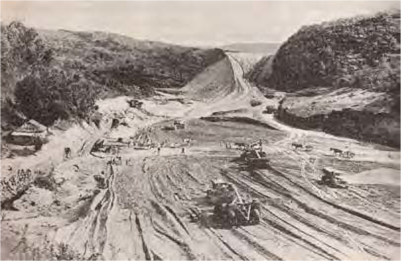
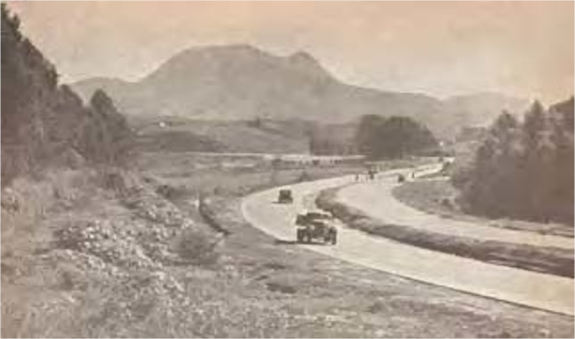

1600/1700
1720 - Anhanguera Filho menciona, em carta, sobre esta rota
1774 - estrada, ainda de terra, era utilizada por tropeiros e viajantes em busca de ouro, pedras preciosas e escravos
1800
1851 - cultura do café no Oeste Paulista impulsiona o investimento nas ferrovias
1867 - criação da “São Paulo Railway”, que estabelecia a ligação ferroviária entre Santos, São Paulo e Jundiaí (atual Linha 7-Rubi da CPTM)
1886 - São Paulo torna-se a “metrópole do café”, aumentando a população da cidade

1900
1915-1921 - construção inicial da “Estrada velha de campinas”, atual Anhanguera, pela mão de obra forçada de 80 presidiários
1920-1927 - malha ferroviária começa a decair e, na mesma época, retornam os investimentos nas rodovias
1921 - primeiro registro oficial encontrado com o nome “Morro Doce”, um dos bairros mais antigos do distrito Anhanguera.
1921-1922 - conclusão do primeiro e segundo trecho da estrada, respectivamente, São Paulo-Campinas e Campinas-Ribeirão Preto
Esta proximidade entre as datas indica que a ocupação do território e o desenvolvimento da rodovia aconteceu ao mesmo tempo
1920
Descrição: Via Anhanguera em construção.
Fonte: Autor: Diniz (2012, p. 127); Acervo:
Biblioteca Digital de Teses e Dissertações da Pontifícia Universidade
Católica de São Paulo.
1930
Descrição: Via Anhanguera e Pico do Jaraguá ao fundo: antigo km 7 (1935).
Fonte: Autor: Eigenheer (2011, p. 30 e 32); Acervo: Biblioteca Digital de
Teses e Dissertações da Universidade Presbiteriana Mackenzie.
1940
1940 - a estrada rudimentar passa por melhorias e ampliações, tornando-se a Via Anhanguera (SP-330) e contribuindo para a expansão periférica, uma vez que migrantes passam a residir cada vez mais distantes das estações e região central.

Descrição: Início da construção da Rodovia Anhanguera no Km 11 (1940).
Fonte: Autor: Eigenheer (2011, p. 30); Acervo: Biblioteca Digital de Teses e Dissertações
da Universidade Presbiteriana Mackenzie.
Descrição: Trabalhadores na construção da Rodovia Anhanguera. Trecho inaugurado em 1948.
Fonte: Acervo: Fonte: Arquivo Público do estado de São Paulo.
1950-80

Descrição: Segunda pista ligando São Paulo a Jundiaí (1953).
Fonte: Autor: Eigenheer (2011, p. 30 e 32); Acervo: Biblioteca Digital de Teses
e Dissertações da Universidade Presbiteriana Mackenzie.
1980 - abertura de indústrias no interior paulistano, impulsionando o surgimento de loteamentos residenciais (condomínios de alto padrão à ocupações irregulares) às margens da rodovia Anhanguera
1990
1990 - embora já houvessem moradores no Morro Doce, nesta década o distrito Anhanguera recebe grande quantidade de migrantes.